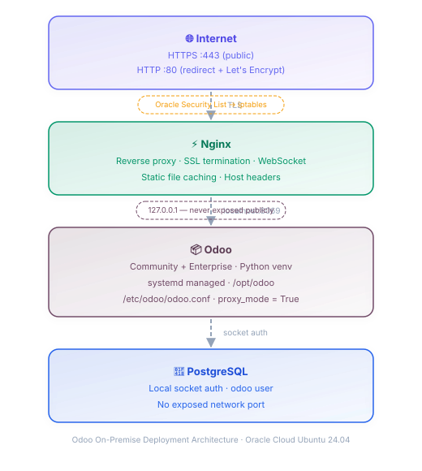

Deploy Odoo On‑Premise on Oracle Cloud
Complete deployment guide covering Ubuntu 24.04 LTS, PostgreSQL, Odoo Community & Enterprise, systemd, Nginx reverse proxy, HTTPS with Let's Encrypt, firewall configuration, and ongoing administration.
Overview
This guide walks you through a complete production-quality deployment of Odoo on Oracle Cloud Infrastructure (OCI). It begins immediately after your Oracle VM is created and reachable via SSH, and covers every step through to a secured, running Odoo instance.
This guide starts after VM creation. It covers PostgreSQL setup, Odoo Community & Enterprise source installation, Python virtual environment, odoo.conf, systemd service, Nginx reverse proxy, domain configuration, HTTPS via Certbot, dual-layer firewall, and administration tools.
Architecture
The final deployment uses a layered architecture where each component has a specific responsibility and communicates only with adjacent layers.

Request flow from the public Internet through Nginx to Odoo and PostgreSQL
Odoo binds to 127.0.0.1:8069 only. Port 8069 is never exposed publicly.
All traffic enters through Nginx on ports 80 (redirect) and 443 (HTTPS).
Deployment Roadmap
Follow these chapters in order. Each page covers a single topic with commands, explanations, and verification steps.
Final Verification Checklist
Use this checklist after completing every chapter to confirm a successful deployment.
- ✓ Odoo service is running and enabled on boot
- ✓ PostgreSQL is running with the
odoouser - ✓ Nginx is running and passes configuration test
- ✓ HTTPS active with a valid Let's Encrypt certificate
- ✓ Automatic certificate renewal is configured
- ✓ Odoo is bound to
127.0.0.1only - ✓ Port 8069 is not publicly accessible
- ✓ Firewall exposes only ports 22, 80 and 443